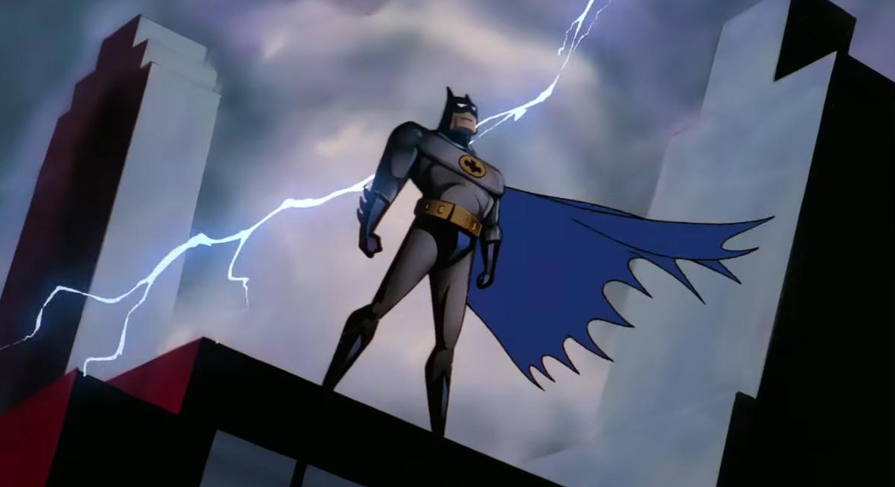
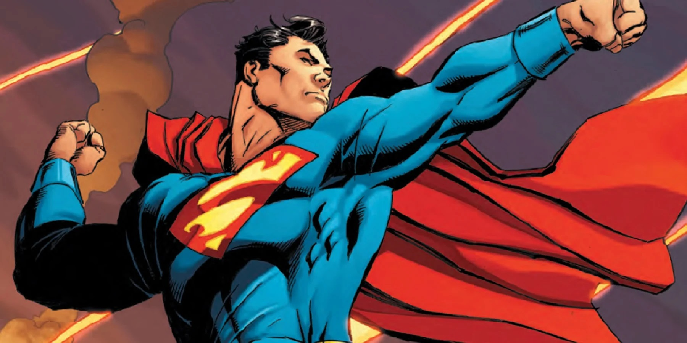
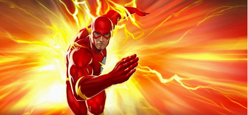

No dia 17 de maio de 1890, foi publicada em Londres pela primeira vez uma revista semanal com histórias desenhadas. Algumas fontes consideram o 17 de maio de 1890 como o dia de nascimento da história em quadrinhos. Foi nessa data que Alfred Harmsworth, mais tarde Lord Northcliffe, um magnata da imprensa de então, lançou em Londres a Comic Cuts, primeira revista com histórias desenhadas. Ela continha mais textos que desenhos e seu conteúdo era satírico-humorístico. Apenas um mês mais tarde, a publicação já tinha atingido uma tiragem de 300 mil exemplares, muito maior do que a dos grandes jornais de então. Outras fontes apontam o americano Richard Outcalt como o verdadeiro criador do gênero. Ele sintetizou o que tinha sido feito até então e introduziu em suas histórias do Yellow Kid, publicadas regularmente a partir de 1897 no suplemento dominical colorido do New York Journal, um elemento novo: o balão com as falas.
A identidade secreta do Batman é Bruce Wayne, um bilionário americano, playboy, magnata de negócios, filantropo e dono da corporação Wayne Enterprises. Depois de testemunhar o assassinato dos seus pais enquanto criança, Wayne jurou vingança contra os criminosos — um juramento moderado por um ideal justiça. Wayne, então, treina física e intelectualmente e cria uma persona inspirada no morcego para combater o crime.[8] Batman opera na cidade fictícia de Gotham City, sendo ajudado por seu mordomo Alfred Pennyworth, o comissário da polícia Jim Gordon e aliados vigilantes como Robin. Ao contrário da maior parte dos super-heróis, Batman não tem superpoderes; assim, na sua guerra contra o crime, utiliza seu intelecto de gênio, sua perícia em artes marciais e sua destreza física — bem como sua riqueza, que lhe garante um enorme arsenal de armas e equipamentos de última geração. Uma grande variedade de vilões compõem a galeria de inimigos do Batman, incluindo o Coringa, seu nêmesis.
Superman ou Super-Homem é um super-herói de histórias em quadrinhos publicadas pela DC Comics. O personagem, entretanto, desde os anos 1930, já foi adaptado para diversos outros meios, como cinema, rádio, televisão, literatura e video game. Superman foi criado pela dupla de autores de quadrinhos Joe Shuster e Jerry Siegel. Sua primeira aparição aconteceu no verão de 1938, na revista Action Comics #1. O personagem nasceu no planeta fictício Krypton e tinha o nome de Kal-El. Foi enviado à Terra por seu pai cientista, Jor-El, momentos antes de Krypton explodir. O foguete aterrissou na cidade de Smallville (por alguns anos, foi traduzida no Brasil como Pequenópolis), onde o jovem Kal-El foi descoberto pelo casal de fazendeiros Jonathan Kent e Martha Kent. Conforme cresceu, Kal-El descobriu que tinha capacidades sobre-humanas. Quando não está com o tradicional uniforme azul e vermelho, vive com Lois Lane e Jimmy Olsen como Clark Kent, um repórter/jornalista no Planeta Diário.
"Flash" é um nome compartilhado por diversos super-heróis da DC Comics. Criado pelo escritor Gardner Fox e pelo artista Harry Lampert, o Flash original estreou em Flash Comics #1 (1940). Também chamado de Velocista Escarlate, o Flash possui velocidade e reflexos sobre-humanos e viola certas leis da física, podendo ultrapassar a velocidade da luz. Até então, quatro personagens ganharam a supervelocidade de modos diferentes e assumiram a identidade de Flash: Jay Garrick (1940-1956), Barry Allen (1956-1986, 2008-presente), Wally West (1986-2006, 2007-presente) e Bart Allen (2006-2007).
